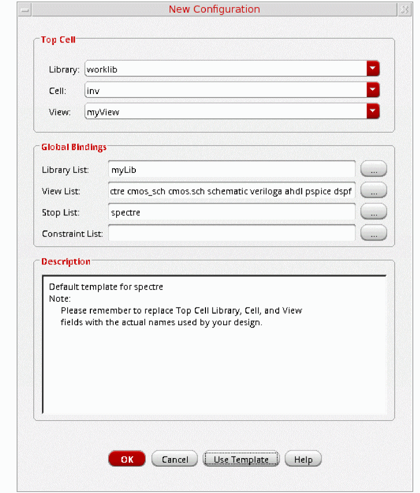

19
Working with UltraSim Simulator
This chapter covers the following topics to describe the UltraSim simulator interface and simulator options:
- Specifying UltraSim Simulator Interface
- Specifying UltraSim Options
- Saving Outputs for UltraSim Simulations
- UltraSim Power Network Solver
- UltraSim Interactive Simulation Debugging
Specifying UltraSim Simulator Interface
You can run Virtuoso UltraSim 64-bit software by specifying one of the following options:
-
Use the
-debug3264 -Vcommand to check your system configuration:$
You can use the information provided by the command to verify if the 64-bit version is applicable to your platform, if the 64-bit software is installed, and whether or not it is selected.your_install_dir/tools/bin/ultrasim -debug3264 -V - Install the Virtuoso UltraSim 64-bit software to the same location as your 32-bit software.
-
Verify that all required software patches are installed by running
checkSysConf(system configuration checking tool script). The script is located in your local installation of Cadence software:$
The script is also available on Cadence Online Support, customer support system.your_install_dir/tools/bin/checkSysConf MMSIM6.0 -
Set the
CDS_AUTO_64BITenvironment variable{ALL|NONE|"list"|INCLUDE: "list"|EXCLUDE:"list"}to select 64-bit executable.-
ALL invokes all applications as 64-bit.
The list of available executable files is located at:$
your_install_dir/tools/bin/64bit - NONE invokes all applications as 32-bit.
-
"list" invokes only the executable files included in the list as 64-bit.
“list”is a list of case-sensitive executable names delimited by a comma (,), semicolon (;), or colon (:). - INCLUDE:”list" invokes all applications in the list as 64-bit.
-
EXCLUDE:”list" invokes all applications as 64-bit, except the applications contained in the list.
setenv CDS_AUTO_64BIT ultrasim setenv CDS_AUTO_64BIT "EXCLUDE:si"
-
ALL invokes all applications as 64-bit.
-
Launch the executable files through the wrapper.
All 64-bit executables are controlled by a wrapper executable. The wrapper invokes the 32-bit or 64-bit executables depending on how theCDS_AUTO_64BITenvironment variable is set, or whether the 64-bit executable is installed. The wrapper also adjusts the paths before invoking the 32-bit or 64-bit executable files. The wrapper you use to launch the executables is located at your_install_dir/tools/bin.Do not launch the executables directly from the your_install_dir/tools/bin/64bit or your_install_dir/tools/bin/32bit directory.Example$your_install_dir/tools/bin/ultrasim -
In the Explorer window, choose Setup – Simulator. The Choosing Simulator -- ADE Explorer form appears. Choose simulator as
UltraSimin this form.
For more information about setting Virtuoso UltraSim simulator options, refer to the Virtuoso UltraSim Simulator User Guide.
Specifying UltraSim Options
To set the Virtuoso UltraSim simulator options,
-
In the Explorer window, choose Simulation – Options – Analog.
The Simulator Options form appears.
-
Set the simulator options as needed.
For more details about the Virtuoso UltraSim simulator options, refer to the Virtuoso UltraSim Simulator User Guide. - Click OK.
Setting Voltage Regulator Simulation Options
The voltage regulator (VR) simulation feature in the UltraSim simulator allows you to simulate designs with large circuit blocks powered by internal voltage regulators. For more information about VR simulation, see the Voltage Regulator Simulation in the Virtuoso UltraSim Simulator User Guide.
To set the voltage regulator options,
-
In the Explorer window, choose Simulation – Options – Analog.
The Simulator Options form appears. - Click the Main tab.
-
Ensure that the global simulation mode specified in the Simulation Mode drop-down field is
Digital Extended (DX),Digital Fast (DF),Mixed Signal (MS)orDigital Accurate (DA). - Click the tab.
- Select the Voltage Regulator check box to enable VR simulation.
-
Click the Setting button next to the Voltage Regulator check box.
The Voltage Regulator Settings form appears.
You can use this form to specify the cells, cell terminals, instances and nets to be used for VR simulation. Note the following:You can specify cell terminals only if you are using the simulation front end parser (SFE) with the Ultrasim simulator. For information about using the SFE parser with the Ultrasim simulator, see the Spectre AMS Designer and Xcelium Simulator Mixed-Signal User Guide.For more information, see the following topics:
Adding Objects for VR Simulation
To add an object (cell, cell terminal, instance or net) for VR simulation,
-
Select the voltage regulator type.
-
Enter the name of the object in the text field, or click the Select button to select the object on the schematic.
- If the voltage regulator type is Cell, enter the cell name in the Cell field, or click the Select button to select the cell on the schematic.
-
If the voltage regulator type is Cell Terminal, enter the cell terminal name in the Cell Terminal field using the format
"library" "cell" "port", or click the Select button to select the cell terminal on the schematic. - If the voltage regulator type is Instance, enter the instance name in the Instance field, or click the Select button to select the instance on the schematic.
- If the voltage regulator type is Net, enter the net name in the Net field, or click the Select button to select the net on the schematic.
-
Click Add.
The object is displayed in the Voltage Regulator Summary table.By default, the object is enabled for VR simulation. For more information, see Disabling and Enabling Objects for VR Simulation.
Verifying the Objects Added for VR Simulation
After specifying the objects for VR simulation, you can verify whether the objects exist in the schematic.
To verify whether the objects enabled for VR simulation exist in the schematic,
If any of the objects do not exist in the schematic, a message box appears displaying the list of such objects.
- Only the objects that are enabled in the Voltage Regulator Summary table are verified.
- The verification process does not check objects that exist in text files, and will report such objects as not found in your schematic.
Disabling and Enabling Objects for VR Simulation
You can disable and enable objects for VR simulation. The On status in the Enable column in the Voltage Regulator Summary table indicates that the object is enabled for VR simulation. The Off status in the Enable column indicates that the object is disabled for VR simulation.
To disable an object for VR simulation,
To enable an object for VR simulation,
Modifying Objects
To modify an object in the Voltage Regulator Settings form,
-
Select the object in the Voltage Regulator Summary table.
The information for the object is displayed in the Select Voltage Regulator group box. -
Modify the object information and click the Change button.
The changes are displayed in the Voltage Regulator Summary table.
Deleting Objects
To delete an object in the Voltage Regulator Settings form,
Highlighting and Dehighlighting Enabled Objects on the Schematic
The objects that are enabled for VR simulation can be highlighted on the schematic.
To highlight an enabled object on the schematic,
-
Select the object in the Voltage Regulator Summary table and click the Highlight button.
The selected objects are highlighted in yellow color on the schematic. If the selected object is a cell, all instances of the cell are highlighted on the schematic.
To dehighlight all objects on the schematic,
Setting Skip Options in Ultrasim
To set the Skip options in Ultrasim:
- In the Explorer window, choose Simulation – Options – Analog.
- The Simulator Options form appears, choose Main Tab.
The Skip Subckts options appears in the Main Tab of Simulator Options form. Set the skip options as required.
You can enter multiple subcircuit instances and names in respective fields. You can also directly select instances from the schematic by using the Select button.
Setting Block-Based usim_opt Options
Schematic
You can use the block-based usim_opt on schematics option to set speed, accuracy, and functionality of the Virtuoso UltraSim simulation for local subcircuit instances. Any Virtuoso UltraSim simulator options, including usim_opt, can be set in instance properties on the schematic. The most commonly used options are
For more details, refer to Simulation Options chapter in the Virtuoso UltraSim Simulator User Guide.
To set block-based usim_opt on schematic options
- Click an instance in the schematic.
-
In the schematic window, choose Edit – Properties – Objects.
The Edit Object Properties form appears.
-
Click Add.
The Add Property form appears.
-
In the Name field, type
usim_opt. -
Type
sim_mode=da speed=3 analog=2into the Value field. - Click OK to save the settings and close the Add Property form.
- In the Edit Object Properties form, click OK.
- In the schematic, choose Design – Check and Save.
-
In the Cadence® Analog Design Environment simulation window, choose Simulation – Options – Analog.
The Simulator Options form appears. - Turn on Allow usim_opt on schematics.
- Click OK to save the settings and close the Simulator Options form.
-
Run netlisting or the simulation from the Simulation window.
The usim_opt settings are set locally for the instance block in the netlist.
Hierarchy Editor
You can also set block level usim_opt options, such as speed and accuracy, using the Cadence® Hierarchy Editor (HED). For more information about setting Virtuoso UltraSim simulator options, refer to Simulation Options chapter in the Virtuoso UltraSim Simulator User Guide.
-
From the CIW, choose File – New – Cellview.
The Create New File form appears.
- Choose a library, cell, and view.
- Choose Hierarchy-Editor from the Tool drop-down list box.
-
Click OK.
The New Configuration form appears.
-
Click the Use Template button located at the bottom of the form.
The Use Template form appears.
- Choose spectre from the Name drop-down list box.
-
Click OK.
The New Configuration form redisplays with default data for the Top Cell and Global Bindings sections.
 - In the Top Cell section, enter the desired library, cell name, and schematic view.
-
In the Global Bindings section, remove
myLibfrom the Library List field. -
Click OK.
The Cadence hierarchy editor form displays your data.
-
Choose View – Properties.
The sim_mode and speed columns appear in the Cell Bindings section. -
Choose Edit – Add Property Column to add additional cell- or occurrence-based properties to the Cell Bindings section.
-
Set options for cell- or occurrence-based properties.
To set options for cell-based properties,-
Right-click in a property column.
A popup menu appears. - Choose Set “property name” Cell Property to set the property.
To set options for occurrence-based properties,- Choose View – Tree.
-
Select an instance and right-click a property column in the Cell Bindings section.
A popup menu appears. - Choose Set “name” Occurrence Property.
- Choose the appropriate property value.
-
Click OK.
The instance is marked with anosymbol. -
Choose View – Update.
The Update Sync-up form appears. - Click OK to save the cellview.
-
Right-click in a property column.
UltraSim Power Network Solver
This section describes how to detect and analyze power networks using the Virtuoso® UltraSim™ power network solver (UPS) in the analog design environment.
To analyze IR drop effects and their influences on circuit behavior, parasitics in the power and ground net of a circuit design need to be extracted and analyzed together with the circuit. Parasitic elements, such as resistors, capacitors, and inductors, build the power network. These elements need to be simulated, so the parasitic effects on circuit behavior can be analyzed.
To use UPS to detect and analyze power networks:
-
Choose Simulation – Options – Analog.
The Simulator Options form appears.
-
Click the Power Network Solver check box in the Checks Tab.
-
Click the Options button.
The Power Network Solver window appears.

- Adjust the power network solver options as needed.
- Click OK.
For more information, refer to Chapter 5, "Power Network Solver" in the Virtuoso UltraSim Simulator User Guide.
UltraSim Interactive Simulation Debugging
The Virtuoso UltraSim simulator interactive circuit debugging mode allows you to obtain design data, such as circuit elements and parameters, circuit topology, and instantaneous signal values. It can also be used to probe dynamic circuit behavior, including voltage and current waveforms simulated to the current time step.
To use the interactive simulation debugging mode:
-
Choose Setup – Environment.
The Environment Options window appears.
- In the Run Mode field, select Interactive.
- Type in the Interactive Control filename.
- Click OK.
For more information about interactive debugging, refer to Chapter 6, “Interactive Simulation Debugging” in the Virtuoso UltraSim Simulator User Guide.
Saving Outputs for UltraSim Simulations
To view outputs for waveform data:
-
In the ADE Explorer window, choose Outputs – Save All.
The Keep Options form appears.
Analog Probe Output
To output waveform data for an analog probe, choose the appropriate settings.- Select all node voltages use to output all node voltages.
- Select all terminal currents use to output all terminal currents. The Virtuoso UltraSim simulator outputs the first terminal current of each device.
- Preserve All Nodes use to preserve either all or port RC node voltages. RC nodes are not reduced, allowing the nodes to be saved in simulation.
- Hierarchical Depth use to save and display more than one level of hierarchical results.
-
Subckt Name use to indicate the subcircuit name for the analog probe. If a name is not entered into the
subcktsfield, the simulator applies the analog probe to all blocks. -
Except specifies the nodes to be excluded from the analog probe. A node name, element name, or wildcard (
*) can be used.
Save model parameters info specifies that input parameters for models of all components be saved.
Save elements info specifies that input parameters for instances of all components be saved.
Save output parameters info specifies that effective and temperature-dependent parameter values be saved.
Output Format specifies the format in which the results data must be saved. The results data can be saved in the following formats:- SST2 – Signal Scan 2 format. This format is supported for transient analyses only. Non-transient data cannot be generated in the SST2 format and is generated in parameter storage format (PSF) format.
-
PSF – Cadence parameter storage format (PSF)
-
PSFXL – Cadence parameter storage XL format that provides higher performance for large circuit designs.
Logic Probe Output
To output waveform data for a logic probe, choose the appropriate settings (the Keep Options form expands to show the Logic Probe Output settings).The Logic Probe Output option is available only for SignalScan 2 (SST2) and fast signal database (FSDB) waveform output formats.
- Number of voltage threshold use to indicate the number of voltage thresholds for each logic probe.
-
Low Threshold specify for each logic probe the low threshold value which corresponds to the digital
0value. -
High Threshold specify for each logic probe the high threshold value which corresponds to the digital
1value. - Preserve All Nodes use to preserve all or only port RC nodes from the RC reduction.
- Hierarchical Depth use to save and display more than one level of hierarchical results.
-
Subckt Name use to indicate the subcircuit name for the logic probe. If a name is not entered into the
subcktsfield, the simulator applies the logic probe to all blocks -
Except specifies the nodes to be excluded from the logic probe. A node name, element name, or wildcard (
*) can be used.
- Click OK.
Saving Selected Voltages or Currents
To save the simulation data for particular nodes and terminals,
- In the Simulation window, choose Outputs – To Be Saved – Select On Design.
-
In the Schematic window, choose one or more nodes or terminals.
The system circles pins when you choose a current and highlights wires when you choose a net.
Press the Esc key when you finish
Return to top